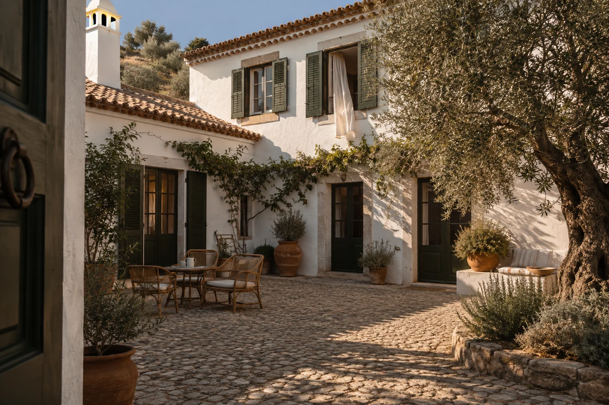
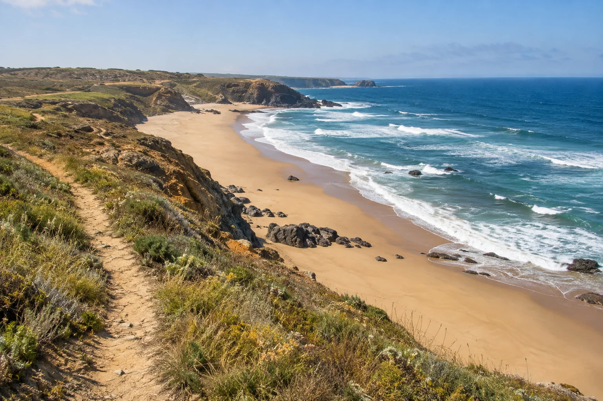

Courtyard Room
24 m² · Up to 2 guests€145 / night
Olive-tree shade, a book left open, nowhere to rush.
Look inside
A shaded courtyard.
A generous breakfast.
The Alentejo coast, close by.
We are a small, independent guesthouse on the Alentejo coast, just outside Vila Nova de Milfontes. Since 2019, our days have begun with bread on the table and the courtyard doors open.
There are eighteen rooms, a house kitchen and a team who will gladly help you shape a day. Make a plan for the beach. Change it over another coffee. There is no house schedule to keep.
Get to know the houseOlive-tree shade, a book left open, nowhere to rush.
Look inside
A little more room, and a terrace of your own.
Look inside
Four sleeping places, one shared hideaway.
Look inside
Bread to tear, fruit to share, coffee while you decide what comes next. Breakfast is included, and there is a small resident-only supper menu for evenings spent at home.
Pull up a chairA walk by the water, a look around town, an afternoon with no particular destination. Our local notes start with how you want to spend the day.
Around the house